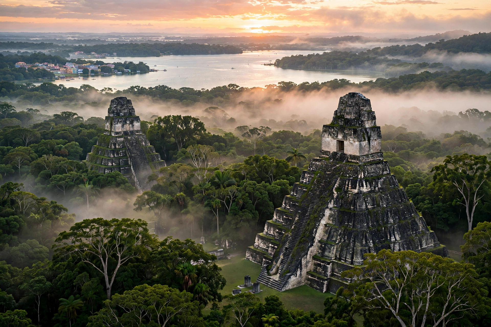

Petén is a department of Guatemala, the country's largest by area at 35,854 km² — about a third of national territory — but sparsely populated, with its capital at Flores on an island in Lake Petén Itzá. It borders Mexico to the north and west and Belize to the east.

| Capital | Flores |
|---|---|
| Area | 35,854 km² |
| Population | ~545,600 (2018) |
Petén was the heartland of the Classic Maya civilisation, home to Tikal, Uaxactún, Yaxhá, El Mirador and many other sites, most now within the Maya Biosphere Reserve. The last independent Maya kingdom, the Itza of Nojpetén, fell to Spain only in 1697.
Low limestone plains covered in tropical forest, with lakes including Petén Itzá. Deforestation for cattle and agriculture is a major concern.